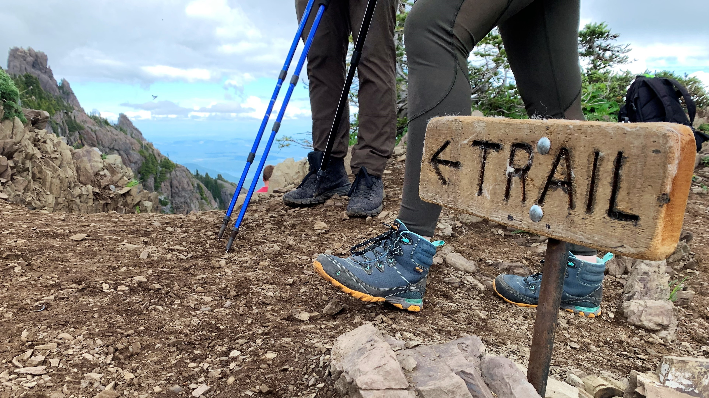

Safety Tips for Hikers

Stay safe on the trails with these important hiking safety guidelines:
- Always tell someone your hiking plan.
- Stay on marked trails.
- Carry enough water and snacks.
- Be aware of the weather conditions.
- Know your limits and turn back if necessary.
- Wear appropriate clothing and footwear.
- Carry a map and compass, and know how to use them.
- Bring a first aid kit and know basic first aid.
- Be aware of wildlife and know how to react to encounters.
- Carry a whistle to signal for help if needed.
- Pack a flashlight or headlamp with extra batteries.
- Check for trail closures and advisories before you go.
- Leave no trace: pack out all trash and respect nature.
- Consider carrying a personal locator beacon (PLB) or satellite messenger.
- Hike with a buddy or group when possible.
- Stay hydrated and take breaks as needed.
- Know the signs of heat exhaustion and hypothermia.
- Respect private property and stay on public trails.
- Be prepared for emergencies and have a plan.